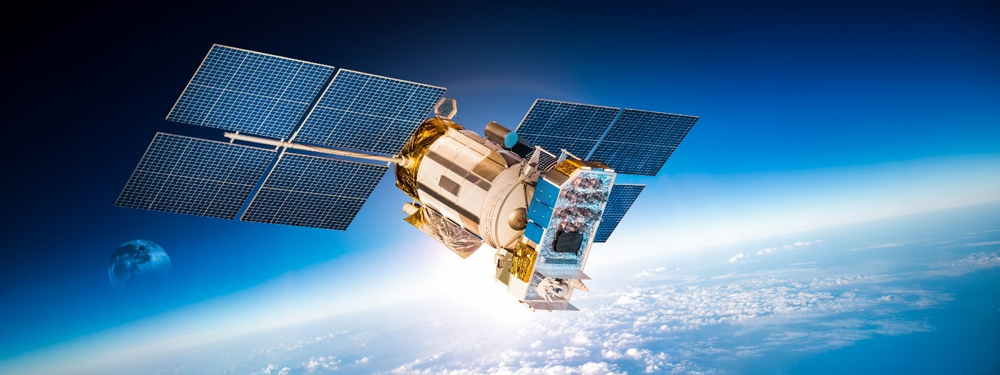
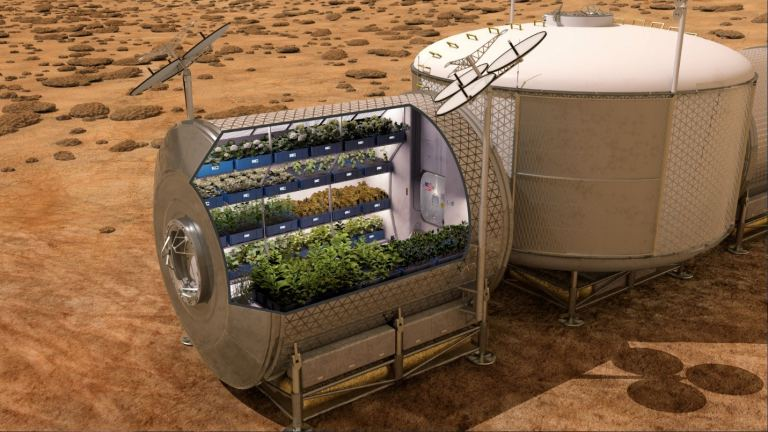

Achinaut One Plans To Assemble Its Own Solar Panels In Space
Humanity is in a bit of a transition period, a time when it makes sense to launch material up and out of Earth’s gravity well into orbit, and beyond. But it’s really expensive, costing up to $10,000 per pound you want in orbit, and 10 times if you want it on the Moon. But over the coming decades, more and more of our space-based infrastructure will be built in space, manufactured out of materials that were mined in space.
What Will It Take To Feed A Million People On Mars?
In 2017, Elon Musk laid out his grand sweeping plans for the future of SpaceX, the company that would take humanity to Mars. Over decades, tens of thousands of Starship flights would carry a million human beings to the surface of the Red Planet, the minimum Musk expects it’ll take to create a self-sustaining civilization.